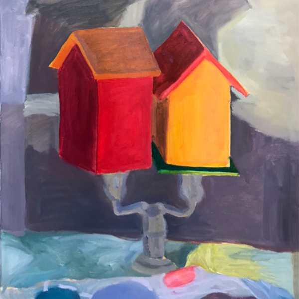
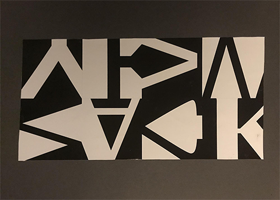
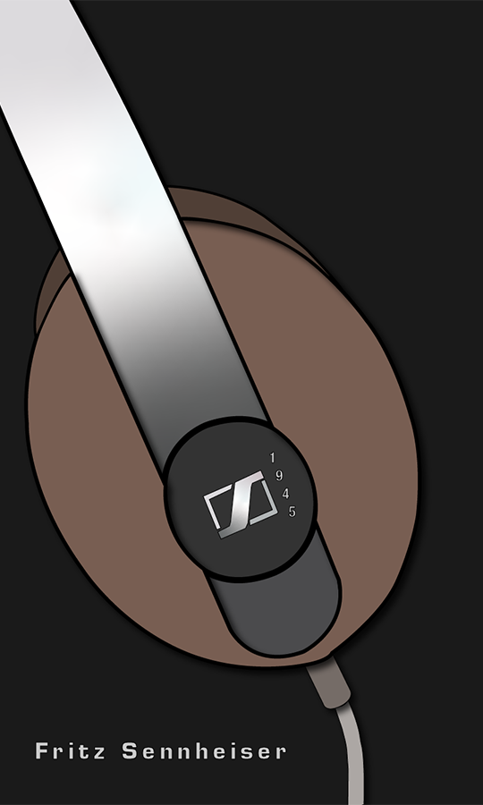
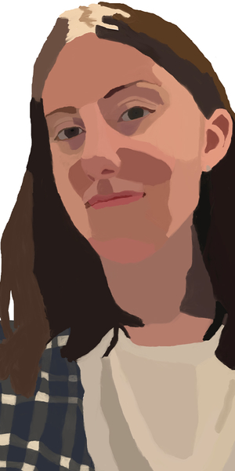
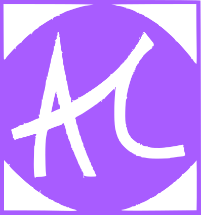

"Birdhouse Painting"
"8 Squares"
"Minimal Object Poster"
"Figure Drawing"

About Me
Amanda Cote has been using Adobe programs for 2 years and she plans on widening her knowledge with them. She is interested in graphic design mainly, but also has an interest in drawing and painting. She works well independently or alongside a group of people. She is always looking to improve her skills and gain inspiration from what is around her.
Contact

774-271-1674
Visit my resume